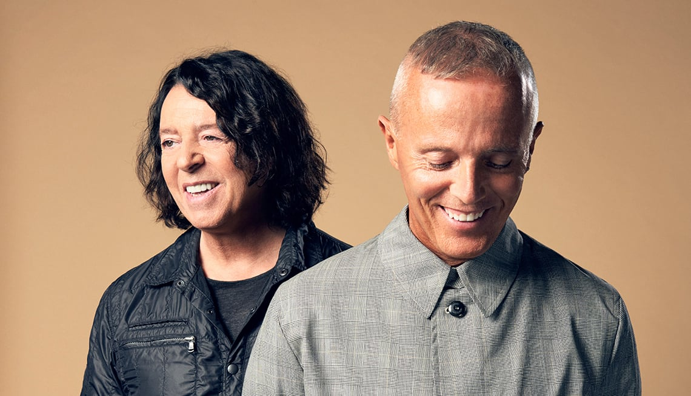

Tears For Fears
Years Active: 1981–present
Genre/s: New wave, pop rock, synth-pop
Label/s: Phonogram, Epic, Gut, Mercury, Fontana, Universal, Concord
Members: Roland Orzabal, Curt Smith
Tears for Fears are an English pop rock band formed in Bath in 1981 by Curt Smith and Roland Orzabal. Founded after the dissolution of their first band, the mod-influenced Graduate, Tears for Fears were associated with the synth-pop bands of the 1980s, and attained international chart success as part of the Second British Invasion.
The band's debut album, The Hurting (1983), reached number one on the UK Albums Chart, and their first three hit singles – "Mad World", "Change", and "Pale Shelter" – all reached the top five in the UK Singles Chart. Their second album, Songs from the Big Chair (1985), reached number one on the US Billboard 200, achieving multi-platinum status in both the US and the UK. The album contained two US Billboard Hot 100 number one hits: "Shout" and "Everybody Wants to Rule the World"; both songs reached the top five in the UK, and "Everybody Wants to Rule the World" won the Brit Award for Best British Single in 1986. Their belated follow-up album, The Seeds of Love (1989), entered the UK chart at number one and yielded the transatlantic top five hit "Sowing the Seeds of Love".
After touring The Seeds of Love in 1990, Orzabal and Smith had an acrimonious split. Orzabal retained the Tears for Fears name as a solo project, releasing the albums Elemental (1993) – which produced the international hit "Break It Down Again" – and Raoul and the Kings of Spain (1995). Orzabal and Smith reconciled in 2000 and released an album of new material, Everybody Loves a Happy Ending, in 2004. The duo have toured on a semi-regular basis since then. After being in development for almost a decade, the band's seventh album, The Tipping Point, was released in 2022, giving the band their sixth UK top five album and their highest chart peak in thirty years and reaching the Top 10 in numerous other countries, including the US.
In 2021, Orzabal and Smith were honoured with the Ivor Novello Award for 'Outstanding Song Collection' recognising their "era-defining Tears for Fears albums" and "critically acclaimed, innovative hit singles".